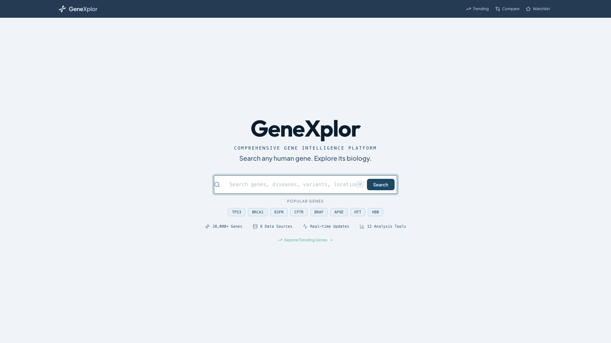

Build on biological knowledge
An open-source, high-performance platform for visualizing and analyzing human genomic data. Connect Ensembl, ClinVar, gnomAD, and AlphaFold effortlessly.

Smart Search
8+
Genomic APIs
12
Analysis Views
5M+
Variants Tracked
20
Async Services
Get Started Today
GeneXplor is open-source and easy to deploy using Docker Compose. Have the full platform running locally in under 3 minutes.
1. Clone the repository
git clone https://github.com/contact-ajmal/geneXplor.git
cd geneXplor
cd geneXplor
2. Start the services
# Starts FastAPI backend and React frontend
docker-compose up -d --build
docker-compose up -d --build
3. Access the platform
The frontend is immediately accessible at http://localhost:5173 and the API root at http://localhost:8000/docs.